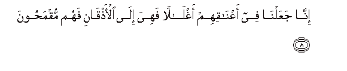
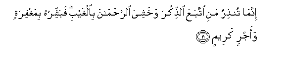

Sacred Texts Islam Index
Hypertext Qur'an Unicode Palmer Pickthall Yusuf Ali English Rodwell
Sūra XXXVI.: Yā-Sīn (being Abbreviated Letters). Index
Previous Next

The Holy Quran, tr. by Yusuf Ali, [1934], at sacred-texts.com
Sūra XXXVI.: Yā-Sīn (being Abbreviated Letters).
Section 1
1. Yā Sīn.
2. By the Qur-ān
Full of Wisdom,—
3. Thou art indeed
One of the apostles,
4. On a Straight Way.
5. Tanzeela alAAazeezi alrraheemi
5. It is a Revelation
Sent down by (Him),
The Exalted in Might,
Most Merciful,
6. Litunthira qawman ma onthira abaohum fahum ghafiloona
6. In order that thou mayest
Admonish a people,
Whose fathers had received
No admonition, and who
Therefore remain heedless
(Of the Signs of God).
7. Laqad haqqa alqawlu AAala aktharihim fahum la yu/minoona
7. The Word is proved true
Against the greater part of them:
For they do not believe.

8. Inna jaAAalna fee aAAnaqihim aghlalan fahiya ila al-athqani fahum muqmahoona
8. We have put yokes
Round their necks
Right up to their chins,
So that their heads are
Forced up (and they cannot see).
9. WajaAAalna min bayni aydeehim saddan wamin khalfihim saddan faaghshaynahum fahum la yubsiroona
9. And We have put
A bar in front of them
And a bar behind them,
And further, We have
Covered them up; so that
They cannot see.
10. Wasawaon AAalayhim aanthartahum am lam tunthirhum la yu/minoona
10. The same is it to them
Whether thou admonish them
Or thou do not admonish
Them: they will not believe.

11. Innama tunthiru mani ittabaAAa alththikra wakhashiya alrrahmana bialghaybi fabashshirhu bimaghfiratin waajrin kareemin
11. Thou canst but admonish
Such a one as follows
The Message and fears
The (Lord) Most Gracious, unseen:
Give such a one, therefore,
Good tidings, of Forgiveness
And a reward most generous.
12. Inna nahnu nuhyee almawta wanaktubu ma qaddamoo waatharahum wakulla shay-in ahsaynahu fee imamin mubeenin
12. Verily We shall give life
To the dead, and We record
That which they send before
And that which they leave
Behind, and of all things
Have We taken account
In a clear Book
(Of evidence).